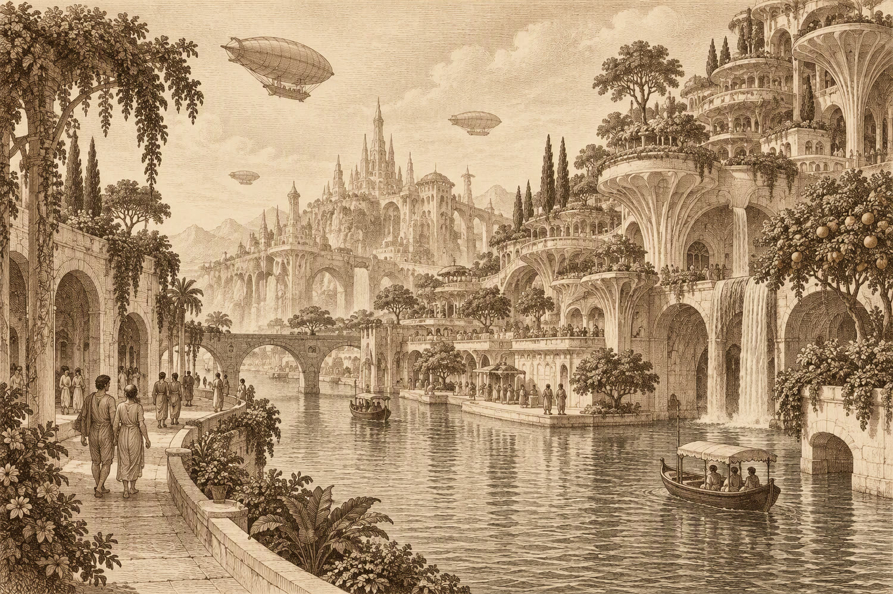
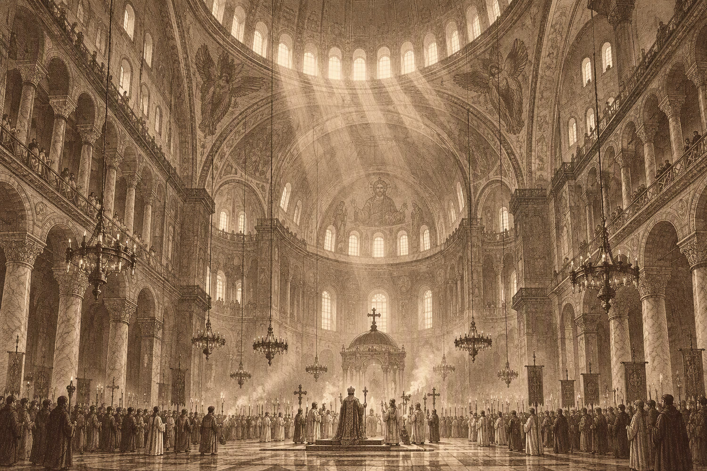

Ministry of Chronological Affairs · Est. 2087
Travel to a time
that suits you.
The Bureau has carried twelve thousand travellers into the past and returned every one of them, more or less on time. Choose an era. We will handle the paperwork — and the consequences.
- 47Eras in the
catalogue - 12,480Travellers
returned - 0Paradoxes
on record

No. 0041-A
Three eras now boarding.
Forty-four more in the cabinet.
Every departure is escorted, insured and reversible. These are this season's most requested journeys; the full index runs 68 million years in both directions.
Era 001
The Mughal Court
Akbar is dying and no one will say it. The atelier is finishing a manuscript that will outlast everyone in the room.
 Era 006
Era 006
The Last Connected Afternoon
For one afternoon, everyone is reachable. Tomorrow the networks go quiet for good, and nobody knows it yet.

Era 007The Quiet Millennium
A thousand years of getting it right. The rivers run clear, the buildings breathe, and nobody has been in a hurry since the 27th century.
Time is not a holiday.
We treat it like one anyway.
Chronological tourism is a regulated industry for good reason. These are the four guarantees printed on the back of every visa, in the order the lawyers insisted on.
Licensed chrononauts
Every guide holds a Class II temporal licence and has been briefed on your century specifically, including what not to say about it.
Paradox insurance
Underwritten by Lloyd's of 1897, 1962 and 2140. Covers up to T 4,000,000 and one mild grandfather incident.
Medical & inoculation
Pre-travel immunity against eleven extinct diseases, a course of anti-nostalgia tablets, and a doctor who travels backwards too.
The return guarantee
If we cannot return you to within ninety minutes of your departure, your fare is refunded and your family is notified gently.
Passed · 04 / 2087
The Bureau has never lost a traveller it could not return. One traveller, in 1988, returned twice. We are still sending him birthday cards.
Read before you go.
All of it.
Notices are revised every Thursday. Three are in effect this week; the other forty-one remain on file at the corridor desk.
On addressing relatives
Do not address your grandmother. She will not know you; she will remember you. Keep your hands visible and your surname to yourself.
The Quiet of 2041
Bring nothing that requires a network, and nothing that requires a battery. Arrive at 15:40. Sit down. Do not introduce yourself.
The Cretaceous
The picnic is catered. Do not bring food. Do not become food. The field screen is not a suggestion, and the guides are not being modest.
I watched the dome go up. Fourteen years of it, in one afternoon. I have never been able to describe it, and I have tried in five languages.
Three minutes of paperwork.
One lifetime, out of order.
No account, no password, no portal. The Bureau has been filling in the same form since 2087, and it is a good form.
Choose an era
Pick from eight open destinations. Each dossier lists climate, hazard, paradox rating and what you may not bring back.
Open the indexApply for a visa
Four short steps. Your manifest totals itself, insurance included. Most applications are approved before you finish reading this.
Begin an applicationReport to the corridor
Ninety minutes early, with the packing list, in the clothes we send you. Your guide will be holding a sign with your century on it.
See the packing list
Eight open this season, six under review.
Since the first corridor opened in 2087.
A record we intend to keep.
Recovered, 1988. Returned twice; we still send cards.
Visa applications · open daily
Still time.
There is always still time.
Choose an era, name your party, and the Bureau will do the rest. Refunds within ninety minutes of your own departure, whichever direction that turns out to be.